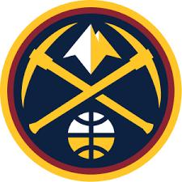

Denver nagetsi (engl. Denver Nuggets) su američki košarkaški klub iz Denvera, Kolorado. Igraju u NBA ligi (Severozapadna divizija). Prvi Denver nagetsi osnovani su daleke 1948. godine, ali je ova franšiza potrajala svega dve sezone. Denver je čekao na svoju košarkašu sekciju do 1967. godine kada se ponovo osnovao klub pod nazivom Denver Larks. Ipak, ubrzo klub je promenio naziv u Rokets, već nakon prve sezone. Ovaj naziv zadržali su sve do 1974. godine kada je vraćeno ime prvoosnovanog kluba - Nagets, naziv koji i danas koriste. Upravo su te sedamdesete bile godine uspeha ovog tima koji je čak devet puta zaredom ulazio u doigravanje. Do 1976. godine ekipa se takmičila u ABA ligi kada je i odigrala finale sa tadašnjom ekipom Njujork Netsa. Međutim, igrači Denvera nisu uspeli da obraduju navijače. Nakon uspešnih sedamdesetih, usledile su osamdesete godine Aleksa Ingliša, osmostrukog učesnika na Ol-staru, i bivšeg najboljeg strelca NBA lige. Upravo za vreme igračke karijere Ingliša, 13. decembra 1983. godine, Denver je sa Detroitom odigrao meč sa najvećim brojem poena ikada — 370. Meč je odigran na tri produžetka, a Pistonsi su slavili rezultatom 186:184. Franšiza beleži lagani pad tokom devedesetih, a kao redovni učesnici plej-ofa etabliraju se kad je Karmelo Entoni došao u ligu 2003. godine. Nikola Jokić je prvi igrač iz franšize Denvera koji je proglašen za najkorisnijeg igrača NBA lige i to u sezonama 2020/21. i 2021/22.
